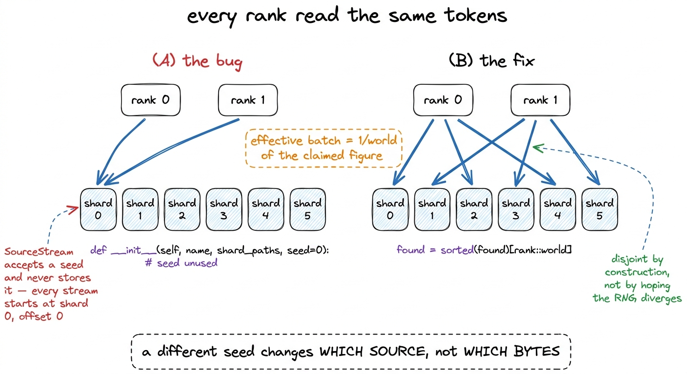
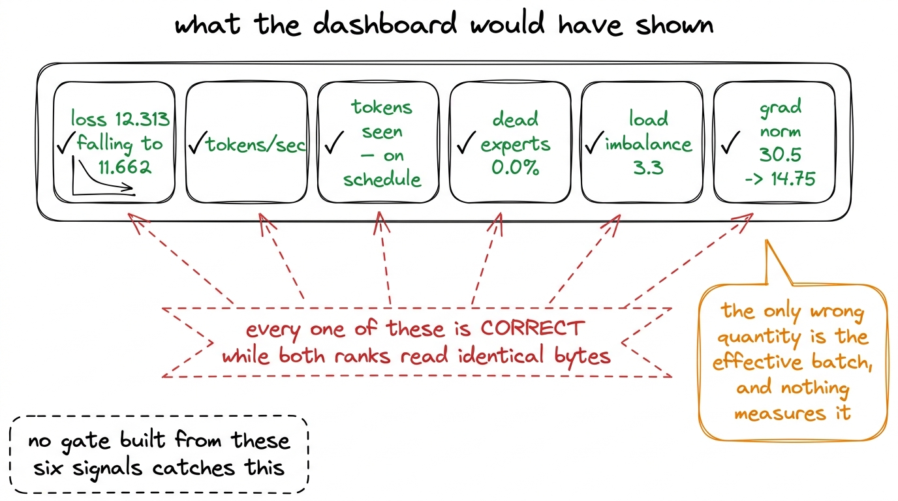
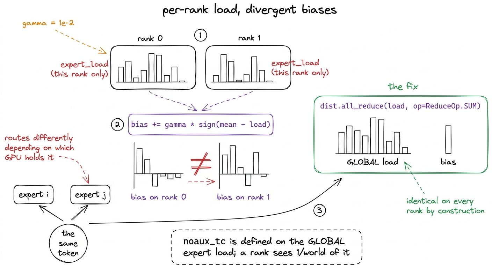
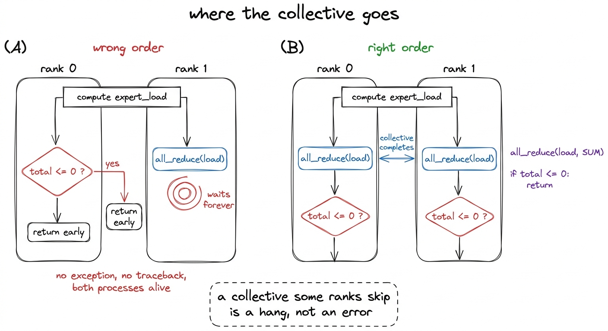
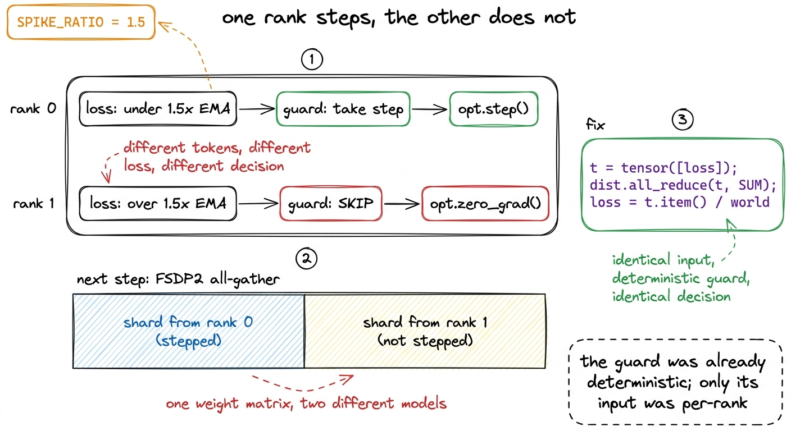
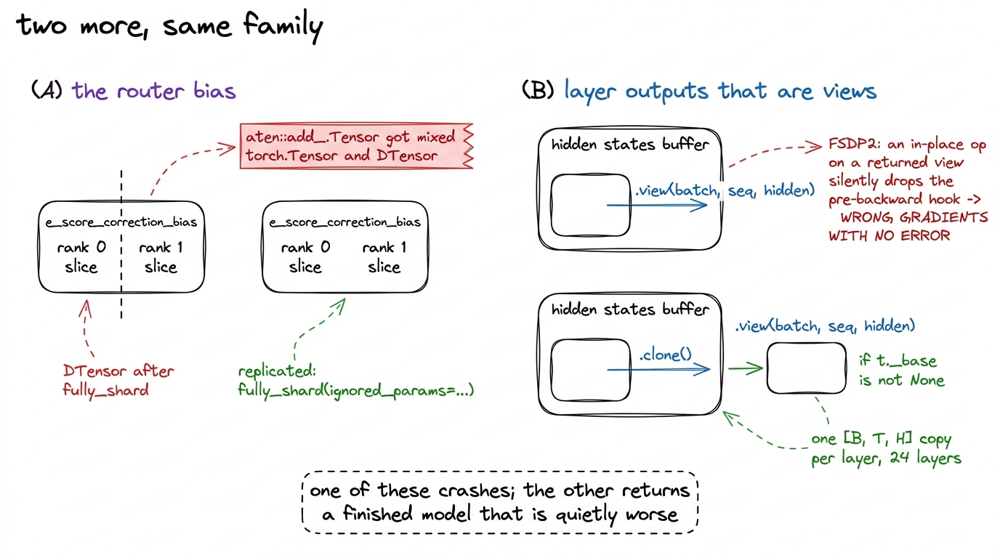
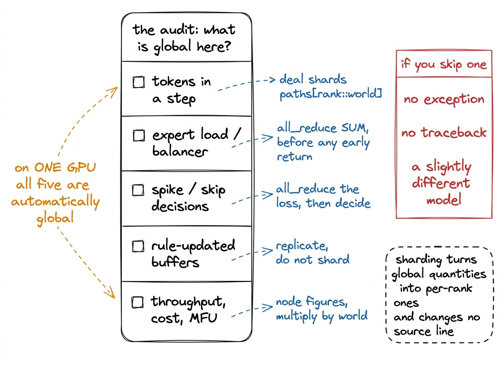

Three distributed bugs that do not crash
Every rank reading the same tokens, a load balancer computed on per-rank load, and a spike guard each rank decided independently. Each one completes the run and returns a model that is wrong in a way no error reports.
r1 fits on one H200 and was never sharded. Everything above it on the ladder does not, and the flagship — 35.56 billion parameters, 498 GB of optimizer state, 86% of two B300 cards — required FSDP2 across two processes. Building that trainer produced three bugs, and none of them raise an exception.
That last property is what makes them worth a chapter. A run that crashes costs an afternoon. A run that completes, writes a checkpoint, reports a falling loss and returns a model that is quietly wrong costs the whole run plus every decision taken on its numbers. All three bugs below are of the second kind, and all three were found by reading the code with one question in mind, because no measurement we had would have found them.
The question is the transferable part, so we state it first: which quantities in this training step are defined over the whole batch, and which are now computed per rank? Single-GPU code does not distinguish, because on one GPU they are the same thing.
Bug 1: every rank read the same tokens
Data parallelism works because each rank consumes a different slice of the batch. Our MixtureLoader samples a source per sequence at the mix weights and pulls tokens from that source's SourceStream, a cursor over its shards. The natural way to make two ranks differ is to seed them differently, and the loader does take a seed.
The seed does nothing.
class SourceStream:
def __init__(self, name: str, shard_paths: list[Path], seed: int = 0):
if not shard_paths:
raise ValueError(f"source {name!r} has no shards")
self.name = name
self.paths = shard_paths
self.shard_idx = 0
self.offset = 0The parameter is accepted and never stored. Every stream starts at shard 0, offset 0, and take(n) walks forward deterministically from there. A different seed on the MixtureLoader changes only which source each sequence is drawn from, so two ranks read the same fineweb-edu bytes in the same order, interleaved differently with the same code bytes and the same maths bytes.

figure rendering · The dataloader before and after. Seeding the ranks differently looks lConsider what the run would have produced. Each rank computes a gradient on its own microbatch, and FSDP2 reduce-scatters those gradients so the optimizer sees their average. The average of world copies of one gradient is that gradient, so the optimizer takes exactly the step it would have taken on one rank's data, at world times the cost. The effective batch would have been 1/world of the claimed figure, which at two B300s is half.
Now consider the telemetry. Loss is a per-sequence average and would have been correct for the batch each rank actually saw. Throughput would have been correct, because the ranks really were processing that many tokens. tokens_seen multiplies the microbatch by the world size, so the duplicates would have counted as distinct tokens and the run would have reported its full token budget on schedule. Dead-expert fraction, load imbalance, gradient norm and learning rate would all have been correct. There is no gate in our monitor, and we could not build one from these signals, that reads differently when two ranks read identical bytes.

figure rendering · The six metrics the run reports, and the quantity none of them touch.The fix is to stop making the streams diverge and make them disjoint instead. Shards are dealt out round-robin at loader construction:
if world > 1:
if len(found) < world:
raise ValueError(
f"source {name!r} has {len(found)} shards but world_size "
f"is {world}; some rank would get no data from it and the "
"realised mix would differ per rank")
found = sorted(found)[rank::world]The guard above the split matters as much as the split. A source with fewer shards than ranks would leave some rank with no data from it, and the loader would drop that source and renormalise the remaining weights, so rank 0 would train on the target mix and rank 1 on a different one. That is the silent-renormalisation failure that turned a six-source stable phase into 100% finemath in the first build of the mix manifests, arriving from a new direction.1 Loader state is therefore per rank, and the sharded checkpoint writes one loader_rank{n}.json per rank. Resuming into a different world size changes the shard split and makes the old cursors meaningless, so dcp_load prints that the data position was not restored rather than silently restarting the corpus.
Bug 2: the balancer balanced the wrong thing
The aux-loss-free balancer K3 inherits updates a per-expert selection bias after every optimizer step:
bias_i += gamma * sign(mean_load - load_i)That rule is defined on the load of the whole batch. Our gate accumulates expert_load as a buffer during the forward pass, which on one GPU is the whole batch and under FSDP2 is one rank's slice of it.
Each rank would therefore have computed sign(mean - load) from a different vector and applied a different update to its own copy of the bias. The biases would have drifted apart over 76,294 steps, and because the bias decides selection, the same token would route to different experts depending on which GPU held it. No consistency check in the model would notice, and each rank's local view would look healthy: every rank would report a low dead-expert fraction on its own load vector while the model as a whole had no single router.

figure rendering · The balancer before and after the all-reduce. Nothing crashes in the lThe fix is one line, and where it goes is the interesting part.
def balancer_step(self) -> dict:
load = self.expert_load
if torch.distributed.is_available() and torch.distributed.is_initialized():
torch.distributed.all_reduce(load, op=torch.distributed.ReduceOp.SUM)
total = load.sum()
if total <= 0:
return {"updated": False}The all-reduce sits before the total <= 0 early return, not after it. Written the other way round, a rank whose gate routed nothing in a window would return early and skip the collective while the other rank blocked on it, and NCCL would wait. The run does not crash; it stops, with both processes alive and the last log line looking ordinary. So the fix for a silent-wrongness bug contains, one line away, a silent-hang bug, and both are resolved by the same discipline: a collective is part of the control flow, and every rank must reach it on every path.

figure rendering · The same two statements in two orders. One of them stops a multi-day rMaking the load global has a second effect that was welcome rather than planned. The dead-expert fraction and load imbalance the collapse gate reads come from the same vector, so after the all-reduce they describe the model rather than one rank, which sees a fraction of the tokens and always looks more collapsed than the model is.
Bug 3: the spike guard would have desynchronised the optimizer
Our spike protocol skips any step whose loss exceeds 1.5 times a running EMA, or whose loss is NaN or infinite. The guard is deterministic given its input, and it is the input that was wrong.
Each rank computed its own average loss over its own gradient-accumulation microbatches and handed that number to its own SpikeGuard. Two ranks holding different tokens produce different losses, and a threshold applied to two different numbers can return two different answers. One rank calls opt.step() while the other calls opt.zero_grad() and continues.
At that moment the ranks hold different weights. FSDP2 keeps only a shard of each parameter per rank and all-gathers the full tensor before every layer's forward, so the next forward assembles each weight matrix from shards belonging to two different models. Nothing checks that they agree. Training continues, the loss falls, and the model is a blend no optimizer step ever produced.

figure rendering · The spike guard desynchronising the optimizer, and the reduction thatThe fix reduces the loss before the guard sees it:
if distributed:
t = torch.tensor([loss], device="cuda", dtype=torch.float64)
dist.all_reduce(t, op=dist.ReduceOp.SUM)
loss = float(t.item()) / world
skip, reason = guard.check(step, loss)The guard's input is now identical on every rank, and the guard is a pure function of its input, so the decision is identical by construction. There are two ways to make ranks agree: compute the same thing on each, or compute it once and share it. The first is a claim about arithmetic that has to stay true through every future edit; the second is a property of the code.
r1 skipped zero spikes across 38,147 steps, which is a useful reminder about this class of bug: on the run that finished, this code path never executed.2 Which is why half of the twenty-four failure-injection tests in the monitoring suite construct the condition artificially. The spike protocol, the abort-after-five-consecutive-skips rule and the NaN branch were exercised against synthetic loss traces, because r1's real trace never left the healthy band.
Two more in the same family
The same audit turned up two more places where sharding changes the meaning of correct-looking code.
The router bias must not be sharded. e_score_correction_bias is updated by rule rather than by gradient, from plain buffers. Once fully_shard has run the bias is a DTensor and the update is not, and the in-place add fails with aten::add_.Tensor got mixed torch.Tensor and DTensor. That was the error the first FSDP2 flagship probe returned, and it is the one member of this group that does crash. It can be repaired by distributing the update to match the bias, which we keep as a fallback, but the better fix is to hold the tensor out of sharding with fully_shard(ignored_params=...). A replicated bias fed by an all-reduced load is identical on every rank because there is one copy of the rule and one copy of its input, rather than identical if the sharding arithmetic is right.3 The tensor is one float per expert per mixture-of-experts layer, so replicating it costs tens of kilobytes against hundreds of gigabytes of weights and optimizer state.
Decoder-layer outputs that are views must be cloned. FSDP2 warns that KimiDecoderLayer returns a view tensor, and that an in-place operation on that view will silently drop the pre-backward hook and skip the all-gather, which can produce wrong gradients with no error. The attention-residual path reshapes with .view(batch_size, seq_len, hidden_size) and the model threads both returned values through 24 layers, so establishing by inspection that no aliasing survives is possible in principle and is not a proof worth betting a multi-day run on. We wrap each layer's forward and clone any returned tensor whose _base is not None:
def _deview(t):
if isinstance(t, torch.Tensor) and t._base is not None:
return t.clone()
if isinstance(t, tuple):
return tuple(_deview(x) for x in t)
return tThe common case costs nothing, because a tensor that is not a view is returned unchanged. The aliasing case costs one [batch, sequence, hidden] copy per layer across the flagship's 24 layers, which is small against a 288 GB card.

figure rendering · The two remaining sharding fixes. Only the first announces itself.The general lesson
Single-GPU code has one source of truth for every quantity. There is one batch, one loss, one expert-load vector, one gradient norm, and any statistic computed anywhere in the step is automatically a statistic of the whole run. Sharding removes that guarantee without removing the code that relied on it: every expression that read a tensor now reads a slice, and none of it changes a line of source.
The audit is therefore mechanical. Walk the training step and, for each quantity, ask what it is defined over. If the answer is the whole batch or the whole model, it needs an explicit collective or a guarantee of replication.
| quantity | defined over | what it becomes when sharded | what we did |
|---|---|---|---|
| the tokens in a step | the whole batch | one rank's slice, maybe a duplicate | dealt shards paths[rank::world] |
| expert load | the whole batch | one rank's routing | all-reduced before the update |
| the spike threshold's input | the whole batch | one rank's loss | all-reduced before the guard |
| the balancer bias | the model | a DTensor slice | held out of sharding |
| tokens seen, cost, MFU | the node | one rank's share | multiplied by world at the source |
The last row is the same error in reporting rather than in training. Throughput in the loop is a node figure, because the step token count already multiplies by world, so dividing it by one card's peak FLOPs would report MFU too high by exactly the world size, which on two cards is double. The hourly rate is multiplied by world for the same reason: every rank is billed, and one rank's share understates the cost of the run by the factor the ladder was built to price.
The failure mode across this table is worth naming precisely. It is not an exception, and it is not a wrong answer that shows up as a diverging loss. It is a slightly different model: one trained at half the intended batch, or with a router that disagrees with itself, or with weights blended from two optimizer trajectories. Every such run finishes, produces a checkpoint that loads, and yields evaluation numbers that are internally consistent and slightly worse than they should be. There is no baseline to notice against, because the correct version of the run is what you were trying to produce.

figure rendering · The audit, as a list. The right-hand column is the reason it is worthWhat was verified, and what still failed
With all five fixes in place, FSDP2 was verified end to end on the flagship: 24 layers sharded, 24 activation-checkpointed, loss falling 12.313 to 11.662 over four steps, dead experts 0.0%, imbalance 3.3, gradient norms 30.5 to 14.75, peak memory 177.9 GB of 287.4, or 62% of one card.4 The probe had to be launched with --detach. Without it, Modal prints the image-build logs, then "Stopping app — local entrypoint completed", and the FunctionCall raises RemoteError with an empty message. That reads exactly like a crash and is not one, which cost us a debugging session on a run that was working.
That is the sharding working. It is not the flagship working. The 35.56-billion-parameter run was launched on 6 August 2026 and failed for a reason unrelated to this chapter: 69.5% of its experts went dead, load imbalance sat between 74 and 85, and it stalled at step 890 of 76,294 having spent $48.33. The balancer constant that recovers r1 from its early collapse did not recover the flagship, which is a scale finding rather than a distributed-correctness one.
The shape of that ledger is the point. Three bugs that would have produced a finished, plausible, wrong model were removed before the run started, at a cost of four lines and one wrapper. The bug that killed the flagship announced itself within the first hundred steps, on a metric we had already learned to watch. The expensive failures are the quiet ones, and sharding a mixture-of-experts model is where the most of them are available.